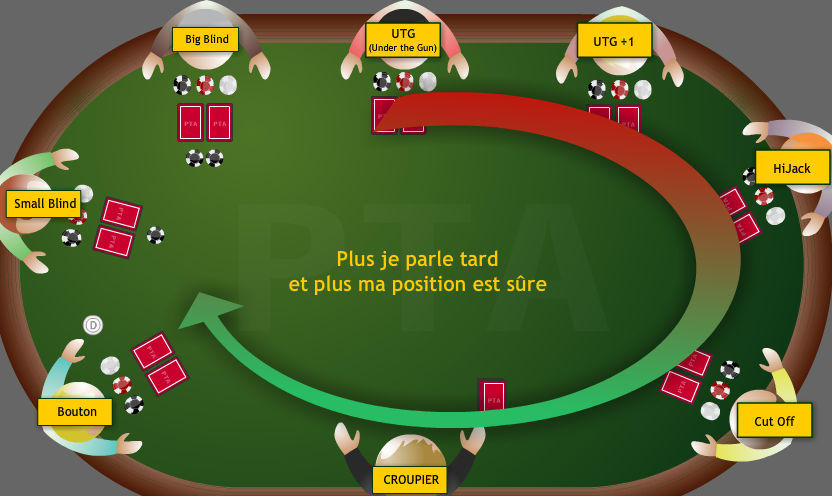

Les mains
-
Quinte flush
La 'suite colorée' ou 'quinte-couleur', plus couramment appelée « quinte flush » ou ''straight flush'' (de l'anglais), est formée de cinq cartes de rangs consécutifs et dont la couleur est identique.
Pour la décrire, on donne sa couleur et le rang de la plus haute carte. Exemple : une quinte flush au huit à carreau.
La 'quinte royale', plus souvent appelée « quinte flush royale » (''royal flush''), est une suite colorée à l'As.
Il n'y a pas connexion de l'As au Deux : la main « Dame, Roi, As, Deux, Trois » n'est pas une quinte flush valable. Une quinte flush contenant un As doit se terminer par l'As ou débuter par l'As.
-
Carré
Le 'carré' (''four of a kind'' ou ''poker'' en anglais) est formé par quatre cartes d'un même rang, accompagnées d'une carte quelconque.
Pour la décrire, on donne le rang (exemple, un carré de rois).
-
Main pleine
La 'main pleine', plus couramment appelée ''full'' ou ''full house'' de l'anglais, est formée d'un brelan et d'une paire.
Pour la décrire, on donne d'abord le rang du brelan puis celui de la paire (exemple, full aux rois par les trois).
-
Couleur
La 'couleur' (''flush'' en anglais) est formée de cinq cartes de couleur identique (qui ne forment pas une suite, sinon il s'agit d'une suite colorée).
Pour la décrire, on donne la couleur et le rang de la plus haute carte (exemple, une couleur au roi à carreau).
-
Suite
La 'suite', parfois appelée 'quinte' en français, ou ''straight'' en anglais, est formée de cinq cartes de rang consécutif (et d'au moins deux couleurs différentes, sinon il s'agit d'une quinte flush).
Pour la décrire, on donne le rang de la plus haute carte (exemple, suite au huit).
Il n'y a pas connexion de l'As au Deux, la main « Dame, Roi, As, Deux, Trois » n'est pas une suite valable. Autrement dit, une suite contenant un As doit se terminer par l'As ou débuter par l'As (si cette convention est acceptée à la table)
-
Suite ou quinte « blanche »
Si cette convention est acceptée à la table, les suites et la quinte pour lesquelles l'As vaut « un » sont possibles, alors cette suite est possible. L'As est alors compté comme un « un » et c'est la plus faible suite ou quinte.
Elle est parfois aussi appelée la roue, ou ''bicycle'' en anglais.
-
Brelan
Le 'brelan' (ou ''three of a kind'' en anglais) est formé par trois cartes de même rang et deux autres cartes différentes (sinon il s'agit d'un ''full'').
Pour le décrire, on donne le rang du groupe de trois cartes (exemple, un brelan de rois).
-
Double paire
La 'double paire' (ou ''two pairs'' en anglais) est formée par deux paires (de rangs différents, sinon il s'agit d'un carré) et d'une autre carte quelconque (de rang différent des deux précédents, sinon il s'agit d'une ''main pleine'').
Pour les décrire, on donne le rang de la paire de carte de plus haut rang puis celle de carte de plus bas rang (exemple, une double paire de rois par les huit).
-
Paire
La 'paire' (''pair'' en anglais) est formée par deux cartes de même rang et trois autres cartes quelconques dont le rang est différent de la paire (sinon c'est un brelan) et différent entre elles (sinon c'est une double paire).
Pour la décrire, on donne le rang de la paire de carte (exemple, une paire de huit).
-
Carte haute
Une main à carte haute, parfois appelée 'hauteur' (ou ''high card'' en anglais), est une combinaison de 5 cartes ne formant aucune des combinaisons pré-citées.
Pour la décrire, on donne le rang de la carte de plus haut rang (exemple, un roi).
Le lexique
-
Le tableau

-
Les positions

-
Limper
Commençons par une petite définition du terme Limp :
Le fait de sous jouer une grosse Main au poker ( style A-A, K-K, Q-Q ) avant le Flop en ne faisant que Suivre, sans tenter de Relancer. On parle aussi de "Slow Play" ou Limp in.